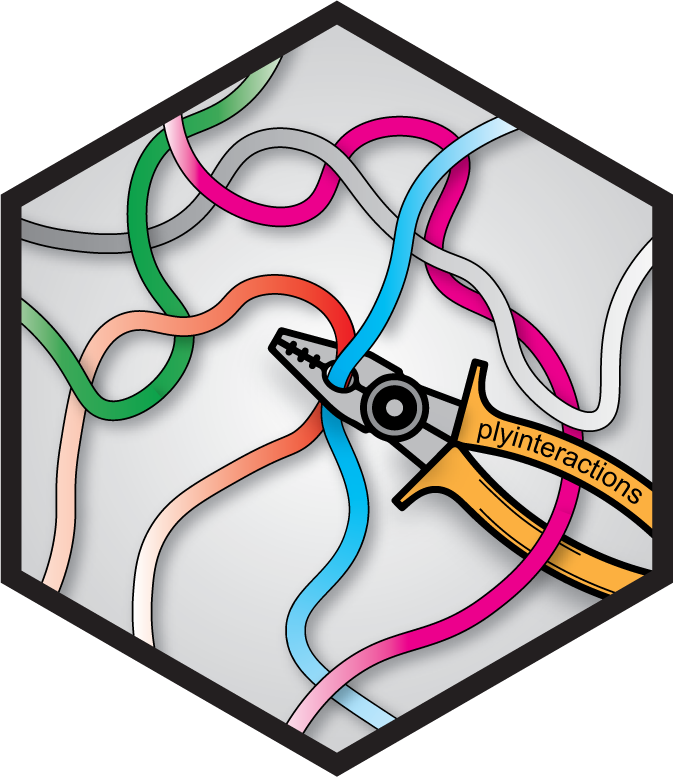

Enhanced GInteractions getters
Source:R/AllGenerics.R, R/ginteractions-getters.R
ginteractions-getters.RdEnhanced GInteractions getters
Usage
anchors1(x)
anchors2(x)
seqnames1(x)
seqnames2(x)
start1(x)
start2(x)
end1(x)
end2(x)
width1(x)
width2(x)
strand1(x)
strand2(x)
ranges1(x)
ranges2(x)
# S4 method for class 'GInteractions'
x$name
# S4 method for class 'GInteractions'
anchors1(x)
# S4 method for class 'GInteractions'
anchors2(x)
# S4 method for class 'GInteractions'
seqnames1(x)
# S4 method for class 'GInteractions'
seqnames2(x)
# S4 method for class 'GInteractions'
start1(x)
# S4 method for class 'GInteractions'
start2(x)
# S4 method for class 'GInteractions'
end1(x)
# S4 method for class 'GInteractions'
end2(x)
# S4 method for class 'GInteractions'
width1(x)
# S4 method for class 'GInteractions'
width2(x)
# S4 method for class 'GInteractions'
strand1(x)
# S4 method for class 'GInteractions'
strand2(x)
# S4 method for class 'GInteractions'
ranges1(x)
# S4 method for class 'GInteractions'
ranges2(x)Value
One of the core GInteractions fields (e.g. seqnames1, start1, ...)
or one of the metadata columns when using $.
Note that auto-completion works with $.
Examples
gi <- data.frame(
seqnames1 = 'chr1', start1 = 1, end1 = 10,
seqnames2 = 'chr1', start2 = 2, end2 = 20
) |> as_ginteractions() |> mutate(type = 'cis')
anchors1(gi)
#> GRanges object with 1 range and 0 metadata columns:
#> seqnames ranges strand
#> <Rle> <IRanges> <Rle>
#> [1] chr1 1-10 *
#> -------
#> seqinfo: 1 sequence from an unspecified genome; no seqlengths
anchors2(gi)
#> GRanges object with 1 range and 0 metadata columns:
#> seqnames ranges strand
#> <Rle> <IRanges> <Rle>
#> [1] chr1 2-20 *
#> -------
#> seqinfo: 1 sequence from an unspecified genome; no seqlengths
seqnames1(gi)
#> factor-Rle of length 1 with 1 run
#> Lengths: 1
#> Values : chr1
#> Levels(1): chr1
seqnames2(gi)
#> factor-Rle of length 1 with 1 run
#> Lengths: 1
#> Values : chr1
#> Levels(1): chr1
start1(gi)
#> [1] 1
start2(gi)
#> [1] 2
end1(gi)
#> [1] 10
end2(gi)
#> [1] 20
width1(gi)
#> [1] 10
width2(gi)
#> [1] 19
ranges1(gi)
#> IRanges object with 1 range and 0 metadata columns:
#> start end width
#> <integer> <integer> <integer>
#> [1] 1 10 10
ranges2(gi)
#> IRanges object with 1 range and 0 metadata columns:
#> start end width
#> <integer> <integer> <integer>
#> [1] 2 20 19
strand1(gi)
#> factor-Rle of length 1 with 1 run
#> Lengths: 1
#> Values : *
#> Levels(3): + - *
strand2(gi)
#> factor-Rle of length 1 with 1 run
#> Lengths: 1
#> Values : *
#> Levels(3): + - *
gi$type
#> [1] "cis"